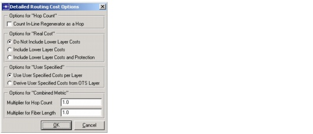

Routing > Route DCL/OCH Traffic Dialog Box > Routing Cost
Routing Cost
You can specify one of the following cost functions when routing an OCH traffic matrix. These functions use different methods to calculate link costs and thereby determine the lowest-cost path.
- Fiber Length—The lowest-cost path is the path with the shortest fiber length.
- Hop Count—The lowest-cost path is the one with the fewest hops. If multiple paths have the same number of hops, SP Guru Transport Planner finds the path with the shortest fiber length.
- Least Used—The cost of a link is set to be inversely proportional to its unused capacity. Specifically, link cost is 1 divided by the unused link capacity.
- Maximum Availability—Using the availability properties (see Availability Settings), SP Guru Transport Planner calculates the availability of each link and calculates the path with the highest availability.
- Real Cost—SP Guru Transport Planner calculates the per-capacity-unit routing cost on each link to determine the shortest (lowest-cost) path, using the cost parameters specified in the Equipment Properties (described in Network Properties).
- User Specified—You can override the routing behavior by specifying a custom cost for a link; see Link Browser for details.
- Combined Metric—To determine the lowest-cost path, SP Guru Transport Planner determines routing costs using the following formula:
<routing_cost> = <multiplier_for_hop_count> * <hop_count> +
<multiplier_for_fiber_length> * <fiber_length>The combined routing cost metric is available at all layers. By default, the hop count of a link at any individual layer equals one. Using the detailed routing options, you can choose to count each in-line regenerator on a link as an extra hop. The fiber length is based on the underlying OTS links. For more information, see the following section.
Detailed Routing Cost Options
To specify detailed routing-cost options, click the "..." button (next to Routing Cost" in the Route DCL/OCH Traffic Dialog Box. The options in this dialog box are described in Table 6-3-Detailed Routing Cost Options Dialog Box .
Figure 6-6 Detailed Routing Cost Options Dialog Box

OTS Layer
| Home © 1987-2007 OPNET Technologies, Inc. All Rights Reserved. This software may be covered by one or more U.S. Patents. See complete patent notice in the Legal Notices section. OPNET Support Center |